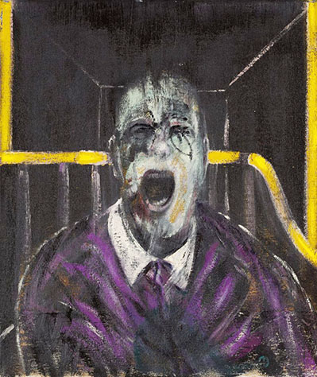
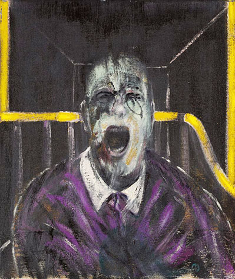
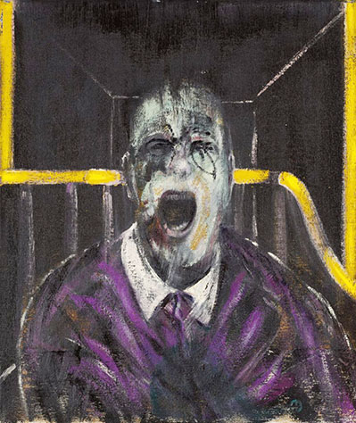

PAINTINGS
 

a great, shocking, eccentric painter
Francis Bacon
1909 ~ 1992
아일랜드 태생 영국 화가로, 대담성과 소박함,
강렬함과 원초적인 감정을 담은 화풍으로 잘 알려져있다.
대개 특징 없는 단색의 배경 위에 추상적인 형상이
유리나 기하학적인 철창에 갇혀 있는 것으로 표현된다.
베이컨은 16세에 자신이 동성애자임을
깨달았고 그로인해 집 밖으로 쫒겨났다.
그는 런던에서 임시직을 맡으며 살았다.
1927년 그의 아버지가 그를 베를린으로
보내삼촌들의 후견하에 살게 하였다.
그가 화가로서의 돌파구를 찾은 것은
1944년 삼단제단화 십자가책형을 기초로
한 형상의 세 가지 습작을 통해서였다.
그는 1940년대부터 1960년대 초까지
두상과 형상이 묘사된 작품을 그려
국제적인 명성을 얻었을 뿐만 아니라
극단적인 암울함과 인간 조건의 연대기적
묘사자로서 확고한 위치를 차지하였다.
